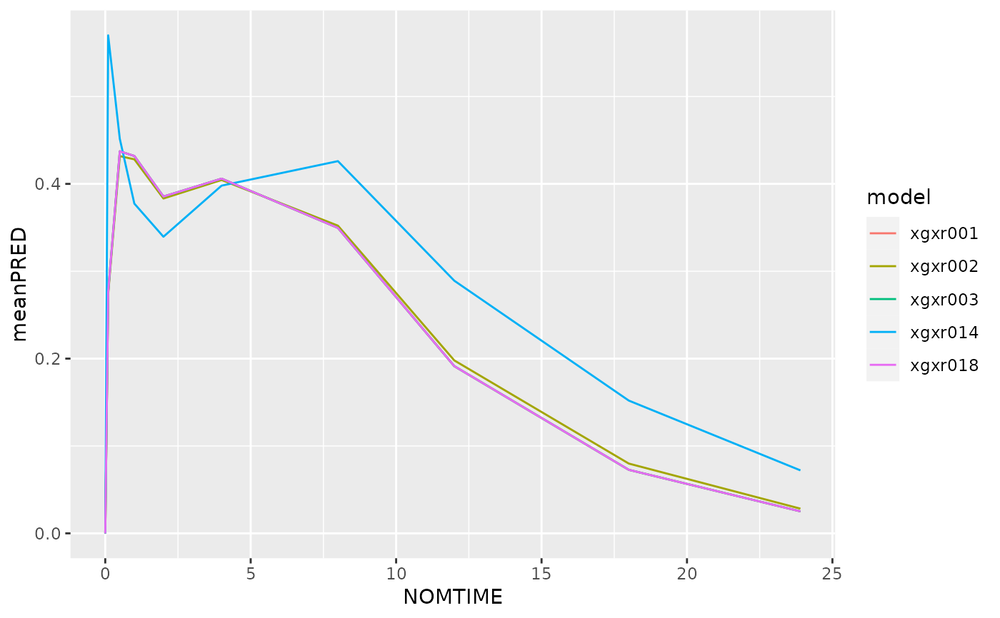

Useful function for meta analyses when multiple models are stored in one folder and can be read with NMscanData using the same arguments.
NMscanMultiple(files, dir, file.pattern, as.fun, ...)File paths to the models (control stream) to edit. See file.pattern too.
The directory in which to find the models. Passed to list.files(). See file.pattern argument too.
The pattern used to match the filenames to read with NMscanData. Passed to list.files(). See dir argument too.
The default is to return data as a data.frame. Pass a function (say tibble::as_tibble) in as.fun to convert to something else. If data.tables are wanted, use as.fun="data.table". The default can be configured using NMdataConf.
Additional arguments passed to NMscanData.
All results stacked, class as defined by as.fun
res <- NMscanMultiple(dir=system.file("examples/nonmem", package="NMdata"),
file.pattern="xgxr01.*\\.lst",as.fun="data.table")
#> Model: xgxr014
#>
#> Used tables, contents shown as used/total:
#> file rows columns IDs
#> xgxr014_res.txt 905/905 12/12 150/150
#> xgxr2.rds (input) 905/1502 22/24 150/150
#> (result) 905 34+2 150
#>
#> Input and output data merged by: ROW
#>
#> Distribution of rows on event types in returned data:
#> EVID CMT output result
#> 0 2 755 755
#> 1 1 150 150
#> All All 905 905
#> Input and output data were searched for candidate unique row identifiers. None
#> found. To skip this check, please use merge.by.row=TRUE or merge.by.row=FALSE.
#>
#> Model: xgxr018
#>
#> Used tables, contents shown as used/total:
#> file rows columns IDs
#> xgxr018_res.txt 905/905 6/6 150/150
#> xgxr018_res_vols.txt 905/905 3/7 150/150
#> xgxr018_res_fo.txt 150/150 1/2 150/150
#> xgxr4.rds (input) 905/1502 21/23 150/150
#> (result) 905 31+2 150
#> Input and output data combined by translation of
#> Nonmem data filters.
#>
#> Distribution of rows on event types in returned data:
#> EVID CMT output result
#> 0 2 755 755
#> 1 1 150 150
#> All All 905 905
#>
#> Overview of model scanning results:
#> lst nrows
#> 1: /home/runner/work/_temp/Library/NMdata/examples/nonmem/xgxr014.lst 905
#> 2: /home/runner/work/_temp/Library/NMdata/examples/nonmem/xgxr018.lst 905
#> ncols success warning
#> 1: 36 TRUE FALSE
#> 2: 33 TRUE FALSE
res.mean <- res[,.(meanPRED=exp(mean(log(PRED)))),by=.(model,NOMTIME)]
library(ggplot2)
ggplot(res.mean,aes(NOMTIME,meanPRED,colour=model))+geom_line()
